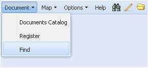

Команда Find
Команда Find (Поиск) служит для поиска необходимых документов в хранилище АСХД по информации о метаданных или о содержании этого документа. Поиск документов по пространственным объектам см. раздел Map.
Выбор команды осуществляется нажатием на её название левой кнопкой мыши, при этом поле названия подсветится цветом.

В рабочем окне Приложения появится специальный интерфейс для поиска с названием Find Document (Поиск документа), содержащий поля для простого и расширенного поиска документов.